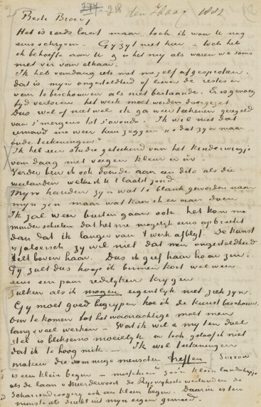

Vincent van Gogh - The Letters
Vincent van Gogh - The Letters is an amazing archive of documents. Searchable, with facsimiles, translations, and including even the original sketches. Van Gogh seems like a fascinating person and the letters contain some gems.
Someone has a great fire in his soul and nobody ever comes to warm themselves at it, and passers-by see nothing but a little smoke at the top of the chimney and then go on their way.
– Vincent van Gogh, Letter no. 155 (June 1880)

Facsimile of a letter from Vincent van Gogh
What am I in the eyes of most people? A nonentity or an oddity or a disagreeable person — someone who has and will have no position in society, in short a little lower than the lowest.
Very well — assuming that everything is indeed like that, then through my work I’d like to show what there is in the heart of such an oddity, such a nobody.
This is my ambition, which is based less on resentment than on love in spite of everything, based more on a feeling of serenity than on passion.
Even though I’m often in a mess, inside me there’s still a calm, pure harmony and music. In the poorest little house, in the filthiest corner, I see paintings or drawings. And my mind turns in that direction as if with an irresistible urge. As time passes, other things are increasingly excluded, and the more they are the faster my eyes see the picturesque. Art demands persistent work, work in spite of everything, and unceasing observation.
– Vincent van Gogh, Letter to Theo van Gogh from The Hague (21 July 1882)